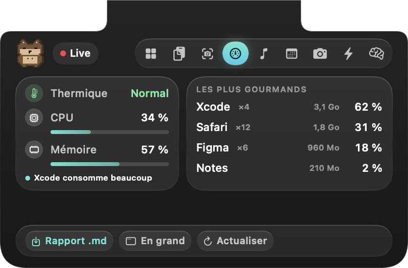

Un moniteur qui parle français
Un verdict en une ligne (« Tout va bien », « Redémarrage conseillé », « Fais de la place sur le disque »), et pour chaque constat, sa cause et l'action en un clic.
- Mémoire détaillée : apps, système, compressée, cache, libre, swap.
- Applications regroupées : les 30 processus de Chrome comptent comme une app.
- Historique sur 14 jours : ce qui ralentit ton Mac régulièrement.
- Rapport Markdown exportable.
